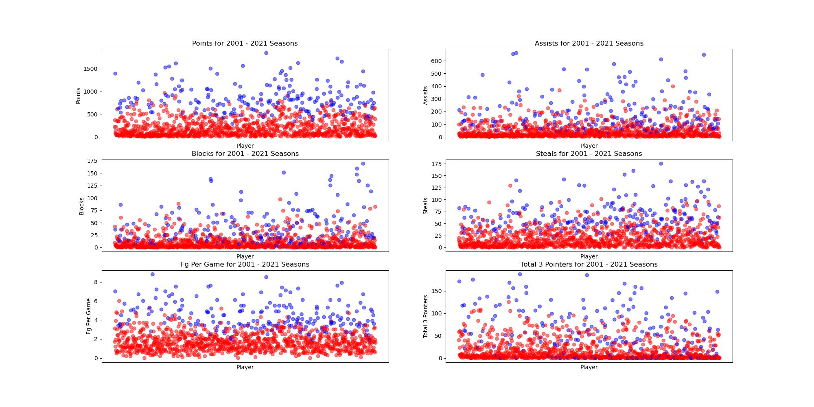

Midterm Report
Introduction/Background
This project will predict the NBA’s annual MVP and DPOY awards, as well as the All-NBA and All-Defensive Team selections. Previous studies have explored the use of machine learning methods to forecast specific game outcomes [1], forecast future NBA rosters [2], and even forecast which college players will perform best in the NBA [3]. However, our project intends to predict which players will be selected for the All-Rookie across the entire NBA through analyzing player statistics and team performances. By doing so, we contribute to the field of sports analytics and machine learning, offering insights into the NBA’s prestigious end of season awards.
In order to achieve this, we will need a dataset of player and team stats from previous NBA seasons, and the winners of the awards at the end of those seasons. We will use a Kaggle NBA dataset, which encompasses detailed regular-season statistics of NBA players since the 1940s. This dataset includes player statistics such as points per game, rebounds, assists, steals, blocks, and yearly team records.
Problem Definition
Our project’s primary problem is the subjective nature of NBA team nominations. Despite the availability of player performance data, the current selection process involves human judgment, which can overlook the statistical contributions of players throughout the season. This subjectivity leads to inconsistencies in award selections. By leveraging ML algorithms to analyze team and player statistics, we aim to develop a model that can identify patterns that correlate with award selections and team nominations to solve this problem. This approach provides a transparent method for award/team selection.
Methods
The first methods our team decided to use were StandardScalar for scaling the data, PCA for data preprocessing, and a Logistic Regression model for predictions.
Data Preprocessing
The dataset we are using for our project is a Kaggle dataset, with player stats beginning in 1947, and continuing for every season up to 2024. The dataset contains statistics for 31000 players. This data came in the form of several CSV files, each containing many different features. We began processing our data by combining the stats for each player across all of these files into a single Pandas dataframe. Additionally, we added the stats for the team the player played on to their row of the dataframe.
Data Cleaning
Since our team was only concerned with the players selected for the All-Rookie team, we modified our data to only include players in their first year. We also removed any duplicate players (who would appear if they were traded during ther duration of the season) so they would not affect our results. Since rookies are traded less frequently, and a rookie who will be selected for the All-Rookie team is almost never traded, this had little affect on our dataset. To begin working on a model, our team decided to use the 2000-2021 season for training data, and the 2022 season for testing. To begin visualising our data, we plotted several key stats for the players in our training data, shown below. Using this visual data, our team was able to manually select the features that seemed most relevant for deciding which player would make the All-Rookie team.

Standard Scalar
Before performing PCA, we scaled our data using the StandardScalar library in sklearn to take into account the difference in player performance across different seasons. The averages for certain stats like points per game have gone up through the years, so in order to account for this we normalized the data. The scaled data is shown in the plot below.
PCA
After scaling the training and testing data, we used the PCA (Principle Component Analysis) class in sklearn to reduce the dimensionality of our data. Using PCA, we obtained the 4 principle components that would retain 95% of the variance in our data. The first 3 principle components are shown below. As can be seen in the plot, there is a large amount of separation between most of the players selected for the All-Rookie team and those not selected.

Logistic Regression Model
In order to make predictions, our team decided to use a logistic regression model for classification. We used the LogisticRegression class in sklearn to perform the classification. The model first splits the training data (2001 - 2021 seasons) into training and test data, with 30% of the data being used for testing. The data is inherently unbalanced between players selected for the All-Rookie team and those not selected since only 10 players are selected per season. To counter this, we added weights to the classes so the model would favor the All-Rookie class. We ran the model several times, and obtained the best results with weights of 1 for the not selected class and 3 for the All-Rookie class. In the model, 0 is used to represent a player not selected, and 1 is used for players that are selected.
Results
Below is a table showing several measurements of our model’s performance. Our model using logistic regression performed much better than we initially expected. Most notable of these metrics is the 0.86 precision for the class 1. This means that 86% of players predicted to make the All-Rookie team did make the team. Additionally, based on the recall for class 1 the model correctly identifies 97% of All-Rookie players. Note that these are the results for a model trained on a random split of the data into a training set and a testing set, and they can change slightly depending on how the data is divided.
Accuracy: 0.97
| Precision | Recall | F1-score | Support | |
|---|---|---|---|---|
| 0 | 0.99 | 0.98 | 0.99 | 242 |
| 1 | 0.86 | 0.97 | 0.91 | 32 |
The below figure shows the confusion matrix for predictions made on the test data. Of the 274 players in the testing data, there were 242 players who were not selected for the All-Rookie team and 32 players who were. The logistic regression model correctly identified 11 All-Rookies, and was not able to identify 1 All-Rookie. Then model correctly identified 237 of the non-All-Rookie players, and misidentified 5 non-All-Rookie players as All-Rookie.

The goal of our model was to be able to accurately predict the All-Rookie players for any given season, based on their current stats. After training our model, we used it to calculate the probabilites of each player for the 2022 season to make the All-Rookie team and then output the 10 most likely players. We used the model in this way because it is gauranteed that there will be 10 All-Rookie players each season. Below are the results for the logistic regression model.
2022 Season All-Rookie Team: Cade Cunningham, Evan Mobley, Franz Wagner, Jalen Green, Scottie Barnes, Ayo Dosunmu, Bones Hyland, Chris Duarte, Herbert Jones, Josh Giddey
2022 Season Predicted All-Rookie Team: Evan Mobley, Cade Cunningham, Scottie Barnes, Franz Wagner, Herbert Jones, Alperen Şengün, Jalen Green, Davion Mitchell, Josh Giddey, Ayo Dosunmu
Incorrect Positive Predictions: Alperen Şengün, Davion Mitchell
Incorrect Negative Predictions: Bones Hyland, Chris Duarte
Based on these results, the model was able to correctly identify 8 out of the 10 All-Rookies from the 2022 season.
Gantt Chart
NBA Award Predition | Project Timeline

Contribution Table
| Name | Contributions |
|---|---|
| Matthew Brown | Model Design and Selection Data Preprocessing Feature Reduction Data Visualization Model Implementation Proposal |
| Rowan Chatterjee | Model Design and Selection Data Preprocessing Data Visualization Proposal |
| Wonjin Cho | Model Design and Selection Data Preprocessing Feature Reduction |
| Clark Cousins | Model Design and Selection Model Implementation |
References
| Material Type | Works Cited |
|---|---|
| eJournal | [1] Thabtah, F., Zhang, L. & Abdelhamid, N. NBA Game Result Prediction Using Feature Analysis and Machine Learning. Ann. Data. Sci. 6, 103–116 (2019). https://doi.org/10.1007/s40745-018-00189-x [Accessed Feb. 22, 2024] |
| eJournal | [2] Yuhao Ke, Ranran Bian, Rohitash Chandra, A unified machine learning framework for basketball team roster construction: NBA and WNBA, Applied Soft Computing, 2024, 111298, ISSN 1568-4946, https://www.sciencedirect.com/science/article/pii/S1568494624000723 [Accessed Feb. 22, 2024] |
| eJournal | [3] Philip Maymin (2021) Using Scouting Reports Text To Predict NCAA → NBA Performance, Journal of Business Analytics, 4:1, 40-54, DOI: https://www.tandfonline.com/doi/full/10.1080/2573234X.2021.1873077 [Accessed Feb.22, 2024] |